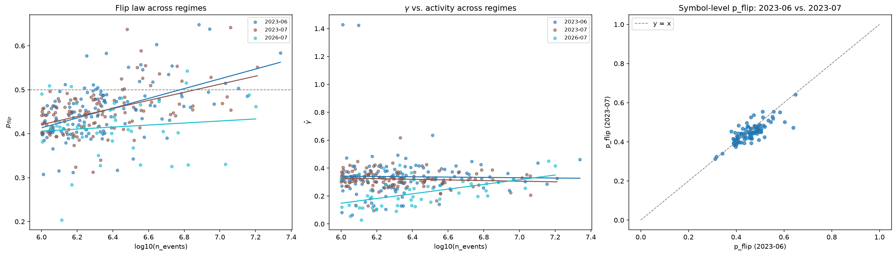

Empirical market microstructure · June 2023
Order flow
remembers.Impact does not.
Three classical microstructure results, re-measured from Binance's full public tick archive and carried to a cross-section wide enough to ask which of them are laws and which are artifacts of how much a symbol trades.
- Raw aggTrades prints
- 105,147,096
- L1 quote updates
- 114,231,299
- Universe requested
- 207 symbols
- Cross-section analyzed
- 121 symbols
- Kernels deconvolved
- 16 symbols
- Endogeneity panel
- 41 symbols
- Regimes re-measured
- 3 · 2023-06 → 2026-07
- Estimator tests vs. synthetic truth
- 171
The three headline findings
Finding 01 · Phase 2Explore →
Memory is liquidity-invariant. Flipping is not.
The long-memory exponent γ barely moves across three decades of activity — the fitted trend explains 0.03% of the cross-sectional variance. Yet the probability that the next trade flips sign rises steadily with activity, and the two tails separate cleanly.
Finding 02 · Phase 2Explore →
Reading impact off the response function is wrong by an order of magnitude.
The measured response mixes the bare kernel with flow memory. Deconvolving them on synthetic data with a known answer recovers β≈0.38; the naive read returns something nearly flat. On real symbols, 12 of 16 land inside the critical-balance band.
Finding 03 · Phase 3Explore →
Two branching-ratio estimators disagree on every single symbol.
The exponential-kernel MLE puts the median branching ratio at 0.707. The model-free count-variance estimator reads higher on 41 of 41 symbols, median 0.959. That gap is the result — not something to average away.
Q4 · 121 symbols · 2023-06
Which statistics are laws, and which are just liquidity?
Every symbol in the 207-symbol universe clearing one million aggressor events gets the same five statistics. Plotted against activity, they answer a question two symbols never could: γ sits flat across the whole range while p_flip climbs, which means order flow's memory and its short-run alternation are separate phenomena with separate drivers.
Each symbol's γ standard error understates its true uncertainty, and unevenly so across the cross-section. Both fitted lines are descriptive summaries, not confidence intervals.
Loading cross-section…
Q5 · 16 symbols · one week
The bare kernel, pulled out of the crowd's reaction.
The response function R(ℓ) is not impact. It is impact plus every correlated trade that followed, related by R(ℓ) ≈ G(ℓ) + Σ G(ℓ−n)·C(n). Because order flow has long memory, that accumulation term dominates and R climbs where G decays — which is why R rises in the data rather than falling. Recovering G means solving the Toeplitz system back out.
Bouchaud's diffusivity argument predicts β = (1−γ)/2. The band below is ±2×max(block sd, 0.04); the 0.04 floor is the deconvolution's own measured finite-length bias, so departures smaller than the method's error are not called violations.
Loading kernels…
Critical-balance departure · Δ = β − (1−γ)/2
Q6 · 41 symbols · Hawkes
How much of the market is the market reacting to itself?
The branching ratio is the fraction of events that are reactions rather than arrivals from outside. Fitting it requires business-time rescaling first: this repo's own synthetic trap shows a regime-switching Poisson process with no self-excitation at all produces spurious near-criticality on clock time.
Error bars are the interquartile range across six independently fitted sub-windows, not standard errors. An exponential kernel fitted to a true power law understates α, so these read as a lower bound.
Loading panel…
Loading comparison…
The disagreement is the finding
Q7 · 6 symbols · replay
What the kernels buy you at the execution desk.
Three schedules run against replayed order flow under one cost model, with each symbol's own measured kernel supplying its impact term. Parameters for the flow-reactive schedule are chosen on days 1–3 and frozen; every number below comes from the disjoint days 4–7.
This is a cost-model comparison, not a backtest and not a trading recommendation. No queueing, depth, latency, or reaction by other participants is modeled.
Loading schedules…
Read the error bars before the ranking
Q8 · 3 regimes · 2023-06 → 2026-07
Does it hold over time?
Everything above is June 2023. So the cross-section and the endogeneity panel were re-run unchanged on two more months — the one after, and one three years later — against the same fixed 207-symbol universe. A cross-sectional law tested out of sample in time asks whether the shape of the cross-section is a property of markets or a property of that month.
Symbols listed after June 2023 are excluded from every regime by design, so this asks what happened to the 2023 panel — not what the 2026 market looks like.
Loading regimes…

Same sign in all three, and that is the weakest true thing to say
How the numbers were checked
Every result above survived an attempt to break it.
A wrong microstructure number does not crash anything. It lands in the published range and looks like a successful replication. The only defense is to measure something whose answer is already known before measuring something whose answer is not — and to keep the record of what that caught.
-
Ground truth first
Estimators validated against series with analytic answers
i.i.d. signs (ACF exactly 0), a Markov chain (ACF = (2p−1)k), FARIMA noise (γ = 1 − 2d), a planted impact kernel the response estimator must recover, and a simulated Hawkes process with a known branching ratio. 171 tests run offline before any real tick touches the pipeline.
-
Trap planted
A process with no self-excitation that fakes near-criticality
A regime-switching Poisson process — a rate that merely alternates on a fixed clock — makes both branching estimators report spurious endogeneity (n̂ = 0.934, α̂ = 0.976) on clock time. That fixture is why business-time rescaling is applied unconditionally rather than when it seems necessary.
-
Caught: misread object
R is not G — a rising response mistaken for a contradiction
The first Q2 write-up framed the rising response function as departing from Bouchaud (2004). The measurement was right and the interpretation was backwards: the literature's decaying object is the kernel G, not the response R. Review caught it, and an independent check closed it — Q1's γ on two months of trades predicts a plateau ratio of about 4.4× (band 3.5–6.9×), and Q2 measured 5.39× on 14 days of quotes.
-
Caught: rejected fix
Thinning bias, and why widening the tolerance was the wrong repair
The seasonal-Hawkes justification test was built by thinning a constant-baseline simulation, which came in at α̂ ≈ 0.285 against a true 0.35. A control — thinning uniformly at random — dropped α to ≈0.25 anyway, proving thinning deletes self-excited children regardless of seasonality. The reviewer confirmed the diagnosis and rejected the remedy: a loosened tolerance is a permanent tax on the test's power. A genuine seasonal-baseline simulator was built instead, and the tight ±0.06 tolerance came back with errors of −0.009 and −0.008.
-
Caught: overstated precision
One seed quoted to four decimals as if it were reproducible
The synthetic deconvolution contrast was quoted as a single pair of numbers when it was seed 20 of three the test actually runs. Restated as across-seed ranges — deconvolved 0.377–0.397, naive 0.063–0.125 — with the point figures labeled as one seed. A second slip in the same pass conflated a percentage with a standard deviation in describing the γ trend, and was split into two separately correct claims.
-
Caught: single-estimator verdict
"Not near-critical," asserted off one of two estimators that disagree
The synthesis layer claimed the panel was not near-critical because zero of 41 symbols exceeded α = 0.9 under the MLE — while the count-variance estimator computed in the same run put all 41 of 41 above 0.9. The source artifact was already correct; the summary had picked a side. All sites were reframed: the panel establishes high endogeneity and leaves how close to critical unresolved, pending a power-law refit.
-
Standing policy
Novelty was checked, and deliberately not pursued
Three agents were tasked with refuting this project's own novelty claims. All three claims failed in strong form — prior art exists for each. The conclusion was to select for benchmark-rich replication instead, so every result here has published work to be checked against.